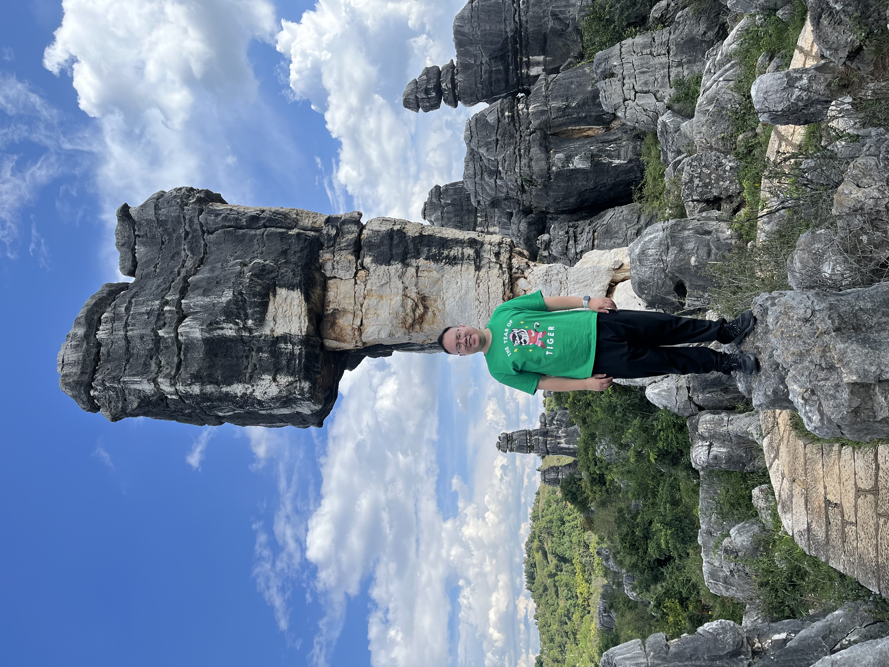

Zhipeng Duan

I am a Lecturer in the School of Mathematical Sciences at Nanjing Normal University.
I obtained my Ph.D. in mathematics from the University of Copenhagen in 2020 under the supervision of
Jesper Møller.
My research interests lie in homotopy theory and combinatorial topology,
especially in applying methods from equivariant homotopy theory to problems
in chromatic homotopy theory.
Funding
- 2025.01–2027.12: National Natural Science Foundation of China (No. 12401084)
Teaching
Current
- 2025–2026 (Autumn Semester): Lecturer in Differential Geometry and Linear Algebra, Nanjing Normal University.
Previous
- 2024–2025: Lecturer in Advanced Mathematics (6 credits), Nanjing Normal University.
- 2023–2024: Lecturer in Advanced Mathematics (6 credits), Nanjing Normal University.
- 2021–2022 (Spring Semester): Lecturer in Advanced Mathematics (4 credits), Nanjing Normal University.
- 2018–2019 (Block 2): Teaching Assistant in Advanced Linear Algebra, University of Copenhagen.
- 2017–2018 (Block 2): Teaching Assistant in Advanced Linear Algebra, University of Copenhagen.